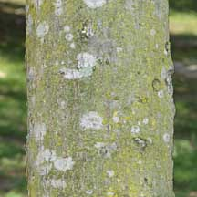
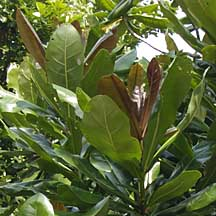
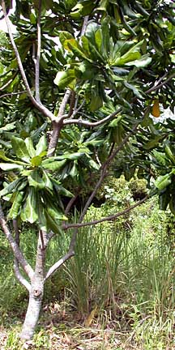
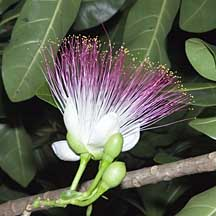
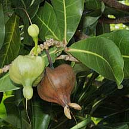

|
|
| plants text index | photo index |
| coastal plants |
| Putat
laut or Sea poison Barringtonia asiatica Family Lecythidaceae updated Jun 2020 Where seen? This tree with large waxy leaves, stunning pinkish pom-pom flowers and square fruits is now widely planted in our coastal parks. It is sometimes seen growing wild in our back mangroves. Elsewhere, it grows in a wide range of coastal habitats from coastal forest, shores, sandy to rocky coasts and occasionally in mangroves. Features: A small to medium sized tree (7-30m tall). Bark pinkish grey, smooth becoming rough and thick in older trees. It may have buttressed roots. Leaves oval (20-30cm long), waxy glossy somewhat fleshy, edge smooth (not toothed). Young leaves may be pinkish olive with pink veins. Older leaves wither yellow or pale orange. |
|
 Bark pinkish grey. |
 Young leaves pinkish. |
 Sungei Buloh Wetland Reserve, Jan 02 |
 Showy pom-pom shaped flower. |
 Squarish fruits that resemble lanterns. |
| Flowers very showy with four white petals and lots of fine, pink-tipped
stamens forming a pom-pom shape (10-15cm). According to Corners "the
buds beging to swell at noon, but the petals and stamens do not unfold
until nearly sunset when the heavy perfume becomes noticeable".
By sunrise the next day, the entire circle of stamens and petals fall
off the tree. Corners says, "The ring of stamens floating downstream
and the stale perfume of the night used to be a morning feature of
Malayan rivers". According to Tomlinson, the night-blooming flowers are pollinated by night-flying animals. According to Hugh Tan, they are pollinated by bats. According to Corners, the flowers are "evidently pollinated by moths, attracted by the scent and hovering in front of the flowers and probing into them with long tongues, they dust the pollen on their bodies". Fruit large (8-10cm) squarish, fibrous and contains 1-2 seeds oblong (4-5cm long). The fruit floats and the softer outer layers rot in the water, so the fruit is stranded on a faraway shore as a fibrous basket surrounding the seed. It is the food plant for moth larvae of Dasychira spp. and Thyas honesta. Human uses: The tree contains a toxin called saponin, concentrated mainly in the seeds but also found in other parts. According to Burkill, the fruits are used as a fish poison. They are pulped and thrown into the river to stun fish. According to Wee, the heated leaves are used in the Philippines to treat stomache and rheumatism and the seeds used to get rid of tapeworms. According to Giesen, juice from the seeds are used to seal paper umbrellas and to kill lice and other external parasites. Status and threats: This tree is listed as 'Critically Endangered' in the Red List of threatened plants of Singapore. Heritage Tree: There is one Putat laut with Heritage Tree status. It is at the Singapore Botanic Gardens, Healing Garden and has a girth of 3m and is 10m tall. |
| Putat laut on Singapore shores |
On wildsingapore
flickr
|
|
Links
References
|